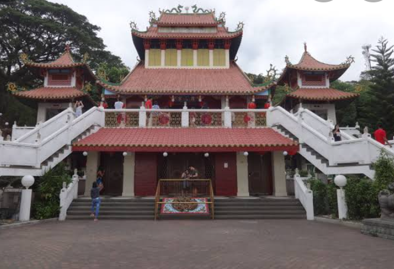
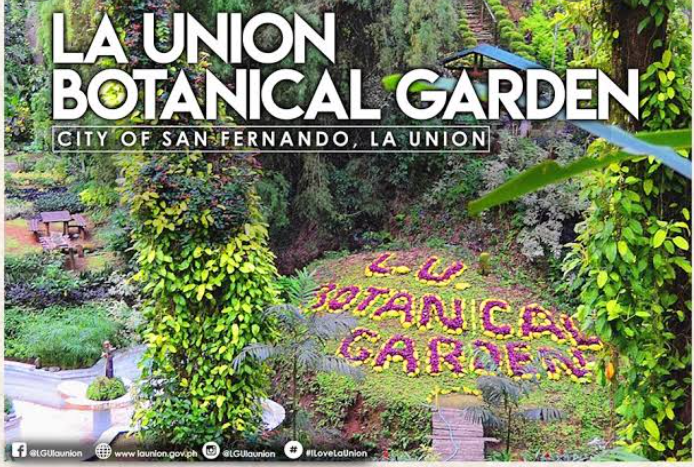
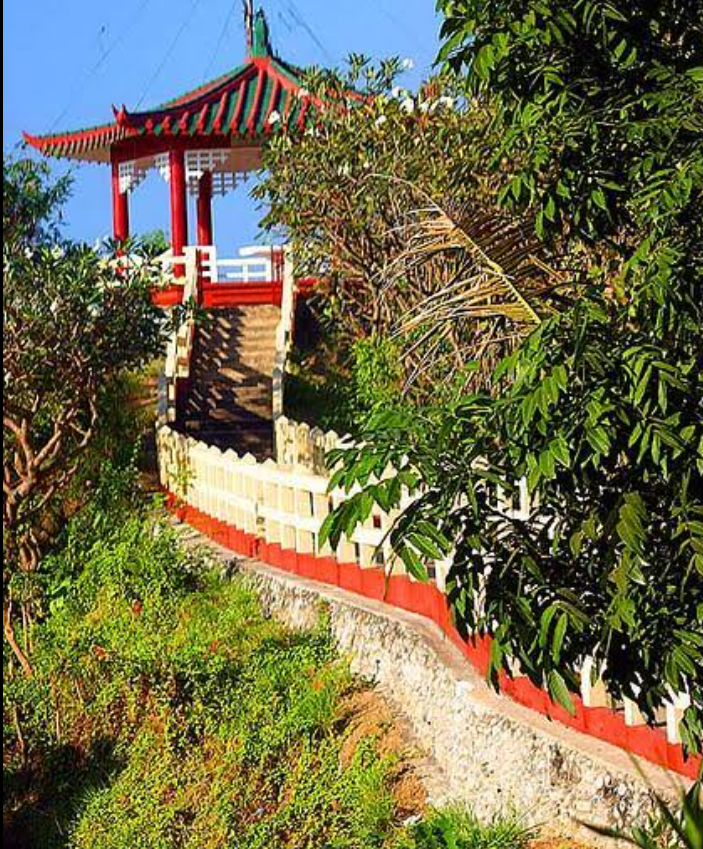
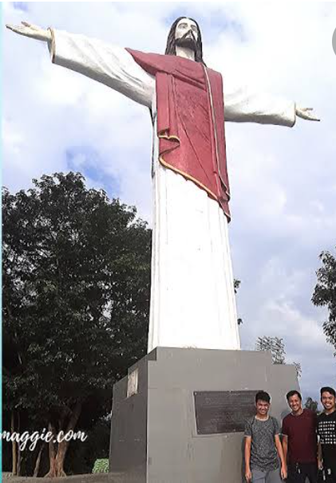

SAN FERNANDO CITY TOURIST ATTRACTIONS
MA-CHO TEMPLE
The Ma-Cho, Mazu or Ma Cho temple is a Taoist temple to the Chinese Sea-Goddess Mazu located on Quezon Avenue in Barangay II, San Fernando, La Union. It was built in 1977 by a group of Filipino-Chinese devotees under the leadership of Dy Keh Hio and with the support of former tourism Secretary Jose D. Aspiras.
LA UNION BOTANICAL GARDEN
The La Union Botanical and Zoological Garden is a display of different themed garden with their scientific names and is a sanctuary for a variety of wild animals situated on a hilly 20-hectare land in Barangay Cadaclan, San Fernando, La Union. The famous garden showcases the following: Shade Garden and Sunken Garden.
PAGODA HILL
Located in National Highway in Pagdaraoan, San Fernando
PINDANGAN RUINS

CHRIST THE REDEEMER STATUE
Located in Barangay 1 Reservoir Hill, San Fernando City, La Union.
PORO POINT BAYWALK

TUBAO TOURIST ATTRACTIONS
ANDUYAN BRIDGE

The marker of the 360 lineal meters Anduyan Bridge along Anduyan-Rizal-San Pascual-Nangalesan-Asin Road was unveiled near approach "B" after which Secretary Villar with DPWH Region I Director Ronnel M. Tan, Department of Tourism Region 1 Director Martin Valera motored for the ceremonial drive thru at the two (2) lanes bridge made of 12 spans at 30 meters pre-stressed concrete girder.
ST. ISIDORE PARISH CHURCH

St. Isidore the Farmer Parish Church of Tubao (Canonically erected in 1896), 2509 La Union, celebrates its fiesta every May 15. It is under the jurisdiction of the Roman Catholic Diocese of San Fernando de La Union (Diocesis Ferdinandopolitana ab Unione, Suffragon of Lingayen-Dagupan, which was created on January 19, 1970 and erected on April 11, 1970, comprising the Civil Province of La Union, under the Titular, St. William the hermit, February 10). The church is under a diocese of the Latin Rite of the Roman Catholic Church in the Philippines from the Archdiocese of Nueva Segovia. The Tubao Church is under the Vicariate of St. Francis Xavier with Vicar Forane, Fr. Jan Errol S. Mantes.